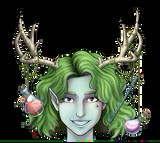

Upcoming Events
LIVE event:
Old Settler's Days
Engler Crystal Designs has invited Florrie to share their space at Old Settler's Days in Salem, Indiana on the 7th and 8th of October, 2023. Opening at 10am until 4pm.
From the John Hay Center website -
John Hay Center
"... the celebration is appropriately centered around the Pioneer Village, which returns to full functioning form and fills with demonstrators and re-enactors. Guests can... quickly find themselves transported back in time by an assortment of reenactments reminiscent of how life in Washington County’s early days was... (There will be) artisan, food and vendor booths, offering an array of unique shopping opportunities, and various musical acts perform over the weekend for everyone’s enjoyment."
Find more info on the Old Settler's Days Facebook page:
Old Settlers' Days
TikTok LIVE event:
Halloween stream
Livestreaming on TikTok in early October. At least one giveway, new potions and maybe... just maybe... WANDS!!!

The grand opening was a success! See highlights on Florrie's TikTok channel here:
Forries Magical Misfits
Two potions were created that night, one a mystery determined by the roll of dice and the other a delightful concoction personalized for one of our prizewinners.
Florrie's Magical Misfits brought her potions to the Indiana Reptile Breeders Expo on Sunday, Sept. 17, 2023. Her host for the day was Engler Rodents and Reptiles. She made mini potions to the delight of passersby, and sees the day as an amazing success.
It looks like Florrie is cooking up something special for October... and even more treats for the holiday season. I hear wishes and cheer may be in the future...